Detected Split Lines
Red line = detected gutter position. Green = high confidence, Orange = text warning.
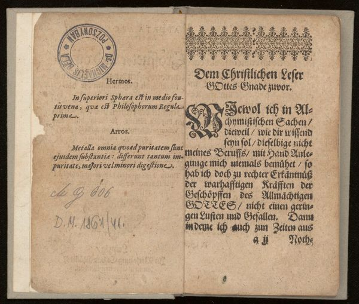
P5: 51.4% ✓
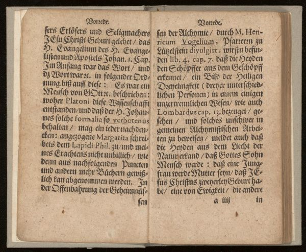
P10: 48.9% ✓
P20: 48.5% ✓
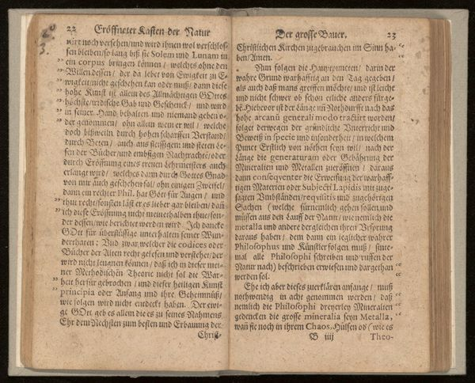
P40: 48.4% ✓
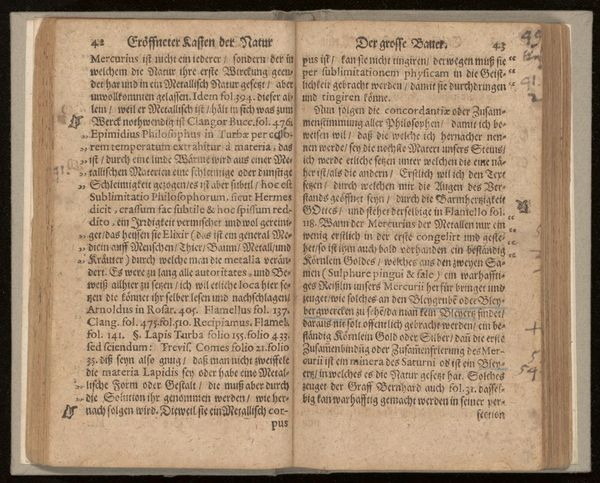
P60: 48.2% ✓
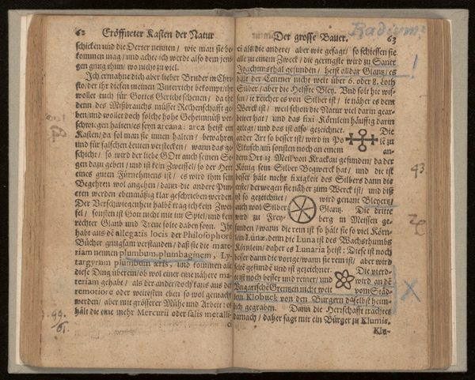
P80: 49.6% ✓
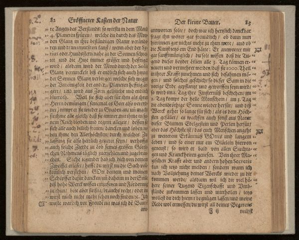
P100: 48.9% ✓
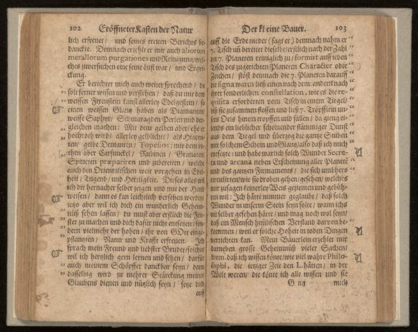
P120: 50.5% ✓
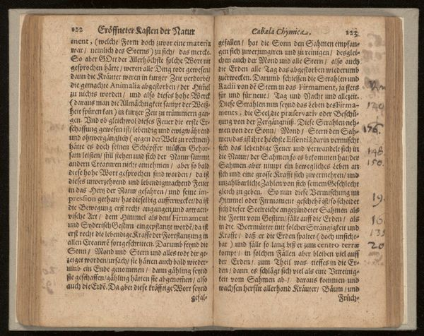
P140: 50.3% ✓

P160: 50.7% ✓
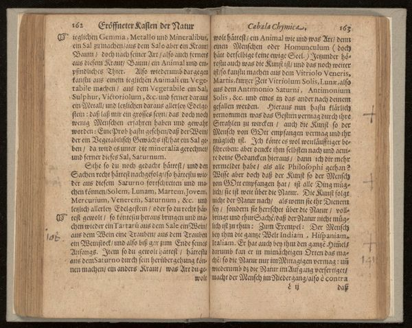
P180: 50.9% ✓

P200: 51.5% ✓
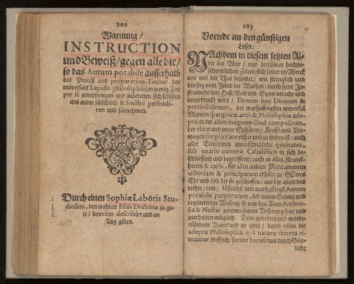
P220: 51.8% ✓
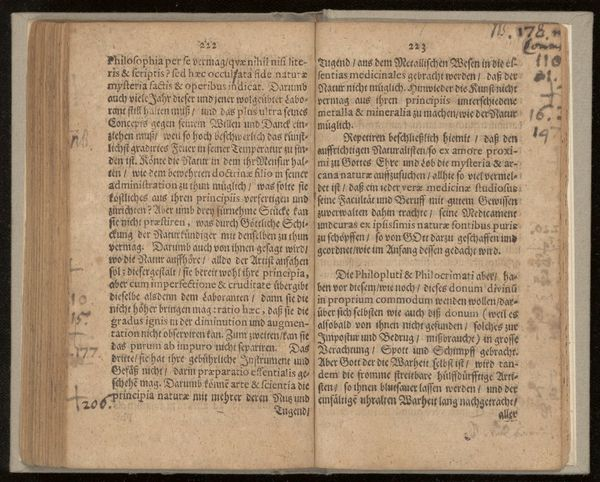
P240: 52.4% ✓